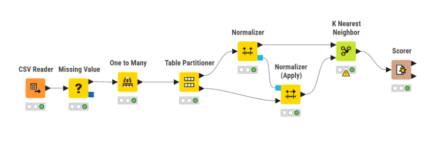
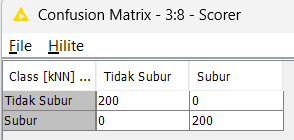

UTS#
Analisis Kesuburan Tanah Menggunakan K-Nearest Neighbors (KNN)#
Melakukan klasifikasi kesuburan tanah menggunakan algoritma K-Nearest Neighbors (KNN).
Dataset terdiri dari:
2.000 data
10 fitur agronomis
2 kelas: Subur dan Tidak Subur
Tahapan yang dilakukan:
Data preprocessing
Training model KNN
Evaluasi performa model
Kesuburan Tanah Dataset#
Gambar Workflow Knime#

Gambar di atas menunjukkan alur workflow pada KNIME yang digunakan dalam proses klasifikasi kesuburan tanah. Proses dimulai dari pembacaan data hingga evaluasi model menggunakan Scorer.
Data Preprocessing#
Tahap preprocessing dilakukan untuk memastikan data siap digunakan dalam model KNN.
Langkah-langkah:
Menangani missing value:
Data numerik → diisi dengan median
Data kategorikal → diisi dengan modus
Encoding fitur kategorikal (
Tekstur Tanah) menggunakan One Hot EncodingNormalisasi data menggunakan StandardScaler
Normalisasi penting karena KNN berbasis jarak, sehingga perbedaan skala fitur dapat mempengaruhi hasil klasifikasi.
import pandas as pd
import numpy as np
from sklearn.model_selection import train_test_split
from sklearn.preprocessing import StandardScaler
from sklearn.neighbors import KNeighborsClassifier
from sklearn.metrics import confusion_matrix, accuracy_score, precision_score, recall_score, f1_score
df = pd.read_csv("../dataset_kesuburan_tanah_missing.csv")
df.head()
| ID | pH Tanah | N Total (%) | P Tersedia (ppm) | K Tersedia (meq/100g) | C Organik (%) | KTK (meq/100g) | Kejenuhan Basa (%) | Tekstur Tanah | Kadar Air (%) | Bulk Density (g/cm³) | Label | |
|---|---|---|---|---|---|---|---|---|---|---|---|---|
| 0 | 1 | 8.93 | 0.183 | 5.35 | 0.124 | 0.68 | 6.18 | 31.86 | Debu | 60.49 | 1.767 | Tidak Subur |
| 1 | 2 | 6.24 | 0.420 | 54.32 | 0.554 | 4.87 | 33.46 | 82.77 | Lempung Berpasir | 35.97 | 0.960 | Subur |
| 2 | 3 | 4.82 | NaN | 13.44 | 0.257 | NaN | 14.79 | 55.45 | Debu | 11.48 | 1.851 | Tidak Subur |
| 3 | 4 | 7.34 | 0.269 | 17.46 | 0.542 | 2.49 | 35.57 | 62.09 | Lempung Berliat | 37.54 | 1.017 | Subur |
| 4 | 5 | 3.77 | 0.144 | 1.15 | 0.106 | 0.62 | 18.97 | 10.85 | Liat | 6.97 | 1.766 | Tidak Subur |
df.info()
df.isnull().sum()
<class 'pandas.core.frame.DataFrame'>
RangeIndex: 2000 entries, 0 to 1999
Data columns (total 12 columns):
# Column Non-Null Count Dtype
--- ------ -------------- -----
0 ID 2000 non-null int64
1 pH Tanah 2000 non-null float64
2 N Total (%) 1840 non-null float64
3 P Tersedia (ppm) 1760 non-null float64
4 K Tersedia (meq/100g) 1860 non-null float64
5 C Organik (%) 1800 non-null float64
6 KTK (meq/100g) 2000 non-null float64
7 Kejenuhan Basa (%) 2000 non-null float64
8 Tekstur Tanah 1900 non-null object
9 Kadar Air (%) 1820 non-null float64
10 Bulk Density (g/cm³) 1880 non-null float64
11 Label 2000 non-null object
dtypes: float64(9), int64(1), object(2)
memory usage: 187.6+ KB
ID 0
pH Tanah 0
N Total (%) 160
P Tersedia (ppm) 240
K Tersedia (meq/100g) 140
C Organik (%) 200
KTK (meq/100g) 0
Kejenuhan Basa (%) 0
Tekstur Tanah 100
Kadar Air (%) 180
Bulk Density (g/cm³) 120
Label 0
dtype: int64
for col in df.select_dtypes(include='object').columns:
df[col] = df[col].fillna(df[col].mode()[0])
df = pd.get_dummies(df, columns=['Tekstur Tanah'])
X = df.drop('Label', axis=1)
y = df['Label']
Pembagian Data#
Dataset dibagi menjadi:
80% data training
20% data testing
Pembagian dilakukan menggunakan metode stratified sampling agar distribusi kelas tetap seimbang.
Selain itu, normalisasi dilakukan setelah pembagian data untuk menghindari data leakage, sehingga model tidak menggunakan informasi dari data uji saat proses pelatihan.
X_train, X_test, y_train, y_test = train_test_split(
X, y, test_size=0.2, random_state=42, stratify=y
)
X_train = pd.DataFrame(X_train).fillna(pd.DataFrame(X_train).median())
X_test = pd.DataFrame(X_test).fillna(pd.DataFrame(X_test).median())
scaler = StandardScaler()
X_train = scaler.fit_transform(X_train)
X_test = scaler.transform(X_test)
Model K-Nearest Neighbors (KNN)#
KNN adalah algoritma klasifikasi berbasis jarak yang bekerja dengan cara:
Menghitung jarak antara data uji dengan data latih
Memilih K tetangga terdekat
Menentukan kelas berdasarkan mayoritas tetangga
Pada penelitian ini digunakan:
Nilai K = 5
knn = KNeighborsClassifier(n_neighbors=5)
knn.fit(X_train, y_train)
y_pred = knn.predict(X_test)
Confusion Matrix#
Confusion matrix digunakan untuk mengevaluasi performa model.
Aktual \ Prediksi |
Tidak Subur |
Subur |
|---|---|---|
Tidak Subur |
200 |
0 |
Subur |
0 |
200 |
Total data uji: 400

Gambar di atas merupakan hasil confusion matrix dari model KNN. Terlihat bahwa seluruh data berhasil diklasifikasikan dengan benar tanpa adanya kesalahan prediksi.
cm = confusion_matrix(y_test, y_pred)
print("Confusion Matrix:\n", cm)
Confusion Matrix:
[[200 0]
[ 0 200]]
Metrik Evaluasi#
Berikut hasil evaluasi model:
Accuracy = 100%
Precision = 100%
Recall = 100%
F1-Score = 100%
Penjelasan:
Accuracy → persentase prediksi benar
Precision → ketepatan prediksi kelas “Subur”
Recall → kemampuan mendeteksi seluruh data “Subur”
F1-Score → keseimbangan antara precision dan recall
accuracy = accuracy_score(y_test, y_pred)
precision = precision_score(y_test, y_pred, pos_label='Subur')
recall = recall_score(y_test, y_pred, pos_label='Subur')
f1 = f1_score(y_test, y_pred, pos_label='Subur')
print("Accuracy :", accuracy)
print("Precision:", precision)
print("Recall :", recall)
print("F1 Score :", f1)
Accuracy : 1.0
Precision: 1.0
Recall : 1.0
F1 Score : 1.0
Analisis Hasil#
Model KNN menghasilkan performa yang sangat tinggi dengan nilai evaluasi mencapai 100%.
Hal ini disebabkan oleh:
Dataset memiliki pola yang jelas dan terstruktur
Batas antar kelas tidak overlap
Data bersifat rule-based (berdasarkan rentang nilai)
Sehingga model dapat dengan mudah membedakan antara kelas Subur dan Tidak Subur.
from sklearn.metrics import classification_report
print(classification_report(y_test, y_pred))
precision recall f1-score support
Subur 1.00 1.00 1.00 200
Tidak Subur 1.00 1.00 1.00 200
accuracy 1.00 400
macro avg 1.00 1.00 1.00 400
weighted avg 1.00 1.00 1.00 400
Catatan#
Meskipun hasil akurasi mencapai 100%, kondisi ini jarang terjadi pada data dunia nyata karena biasanya terdapat:
Noise
Overlap antar kelas
Data yang tidak terstruktur
Oleh karena itu, hasil ini dipengaruhi oleh karakteristik dataset yang sangat ideal.
Kesimpulan#
Berdasarkan hasil analisis:
Algoritma KNN berhasil mengklasifikasikan data dengan sangat baik
Preprocessing seperti normalisasi dan penanganan missing value sangat berpengaruh
Dataset dengan pola yang jelas memungkinkan model mencapai performa maksimal
Model ini dapat digunakan sebagai dasar untuk analisis kesuburan tanah.